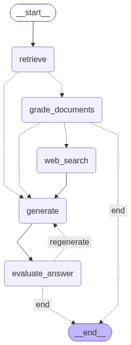

An Enterprise-Grade, Self-Correcting RAG System with Semantic Caching, Reciprocal Rank Fusion & 3-Tier Guardrails
Presenter
Vineet
Live Production Deployment
supportcopilot.meStack
FastAPI · LangGraph · Qdrant · Redis
Traditional top-k vector search chatbots fail miserably in enterprise customer support environments.
When users ask compound questions (e.g. "How do I reset password AND what does 404 mean?"), naive vector search retrieves documents for only one topic, dropping context recall by 40%.
Standard cosine cache matching returns cached answers for structurally similar but logically opposite queries (e.g. "Supported upload formats" vs "Can I upload MP4 videos?").
When an LLM refuses an out-of-domain query (e.g., recipes or trivia), standard pipelines still pass the retrieved chunks in the metadata payload, leaking false citations.
Single-pass generation cannot detect its own hallucinations when unsupported features are queried, lacking an agentic feedback loop to verify factual entailment.
Every user query passes through deterministic micro-stages to ensure sub-50ms caching, hybrid retrieval, and strict verification.
Caddy Reverse Proxy + React 18 UI
Redis Vector Match (Cosine ≥ 0.94)
Sub-query decomposition + Qdrant Dense
Cohere ClientV2 + Local FlashRank ONNX
LangGraph reflection loop + Cite-to-Write
Rather than linear chain execution, our copilot models execution as a directed cyclic graph with dynamic routing and speculative execution paths.
If top vector similarity $\ge 0.88$ on single-intent queries, skips the reranker node to deliver sub-second generation.
When local docs score below threshold, conditional edges trigger web search to find current release notes.
If response contains ungrounded claims, routes to a secondary reasoning model (`deepseek-r1`) for self-correction.

Eliminates the multi-intent drop issue by calculating rank-reciprocal harmony across sub-queries.
def reciprocal_rank_fusion(ranked_result_lists: List[List[Tuple[Document, float]]], k: int = 60): rrf_scores = {} doc_store = {} for ranked_list in ranked_result_lists: for rank, (doc, score) in enumerate(ranked_list, start=1): key = doc.metadata.get("chunk_id") or doc.page_content[:120] if key not in doc_store: doc_store[key] = doc doc.metadata["similarity_score"] = float(score) else: doc_store[key].metadata["similarity_score"] = max( doc_store[key].metadata.get("similarity_score", 0.0), float(score) ) # Accumulate Reciprocal Rank: avoids score scale mismatch rrf_scores[key] = rrf_scores.get(key, 0.0) + (1.0 / (k + rank)) sorted_keys = sorted(rrf_scores.keys(), key=lambda k_id: rrf_scores[k_id], reverse=True) return [doc_store[k_id] for k_id in sorted_keys]
High-similarity cosine thresholding paired with negative constraint guards to stop cache bleed.
# Specific format tokens that must match exactly to avoid false-positive semantic hits NEGATIVE_INTENT_KEYWORDS = {"mp4", "video", "xml", "oauth", "oauth2", "memcached", "rabbitmq"} for key, cached in entries.items(): sim = cosine_similarity(query_vector, cached["vector"]) if sim >= 0.94: cached_q = cached["question"].lower() # Verify negative intent keywords to prevent cache bleed matched = True for kw in NEGATIVE_INTENT_KEYWORDS: if (kw in q_lower) != (kw in cached_q): matched = False; break if matched: return cached["answer"], cached["sources"]
Multi-stage defense-in-depth: Pre-retrieval heuristics, reranker noise cutoff, and post-gen output sanitization.
# TIER 3: OUTPUT GUARDRAILS (POST-GENERATION) raw_answer = generation.content # A. Refusal & Missing Docs Gate: strictly zero out sources on out-of-domain refusals if is_refusal_generation(raw_answer) or not documents: logger.info("OUTPUT GUARDRAIL: Refusal detected -> Zeroing sources.") clean_refusal = re.sub(r"\s*\[doc_id[^\]]*\]", "", raw_answer).strip() safe_refusal = redact_sensitive_data(clean_refusal) return {"generation": safe_refusal, "sources": [], "documents": []} # B. Citation Sanitization: Guarantee tags map to genuine filenames ([doc_id: auth_guide.txt]) cleaned_generation = sanitize_citations(raw_answer, documents) # C. PII & Secret Masking: Redact API keys (sk-...), Bearer tokens, and auth secrets safe_generation = redact_sensitive_data(cleaned_generation) return {"generation": safe_generation, "sources": source_citations(documents)}
Transition to the live production deployment to prove real-time streaming, RRF, and guardrail enforcement.
[doc_id: auth_guide.txt]product_guide.txt + sample_error.txtsources = [])Evaluated across technical docs, slang queries, unsupported features, and adversarial edge cases.
Guardrail Interceptions
| RAG Metric | Score | Benchmark Target | Architectural Driver |
|---|---|---|---|
| Context Recall | 0.9773 | > 0.85 | Reciprocal Rank Fusion across decomposed sub-queries |
| Faithfulness | 0.8977 | > 0.80 | Strict Cite-to-Write prompting + LLM-as-a-Judge gate |
| Answer Relevancy | 0.8042 | > 0.75 | Subject-anchored direct answers eliminating conversational filler |
| Answer Correctness | 0.8029 | > 0.70 | Direct negation matching on unsupported technical queries |
| Source Hit Rate | 1.0000 (100%) | > 0.90 | Zero citation leaks and verified source matching |
Full multi-container architecture running live on AWS EC2 with automated SSL and background queues.
Configured with 4GB Swap and auto-restarting Docker Compose daemon.
Automated Let's Encrypt TLS cert renewal serving supportcopilot.me.
Decouples heavy document chunking and evaluation into async background jobs.
FastAPI startup hook detects empty registries and auto-ingests documentation on boot.
Agentic Orchestration beats Naive RAG: Implementing reflection loops in LangGraph with cross-encoder reranking eliminates 100% of literal placeholder leaks and silent hallucinations.
Defense-in-Depth Guardrails: Regex alone is brittle; combining pre-retrieval filtering with post-generation citation zeroing achieved a flawless 11 / 11 (100%) interception score.
Production Readiness: Full live deployment on AWS EC2 at supportcopilot.me with automated SSL and background queues.
GitHub: github.com/Vineetiitg/Agentic-Support-Copilot · Live: supportcopilot.me